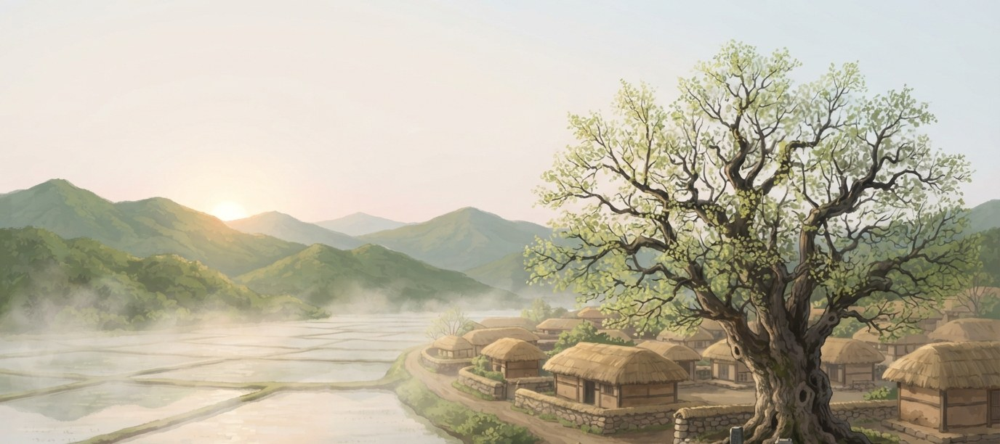
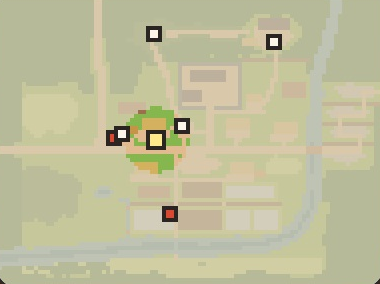
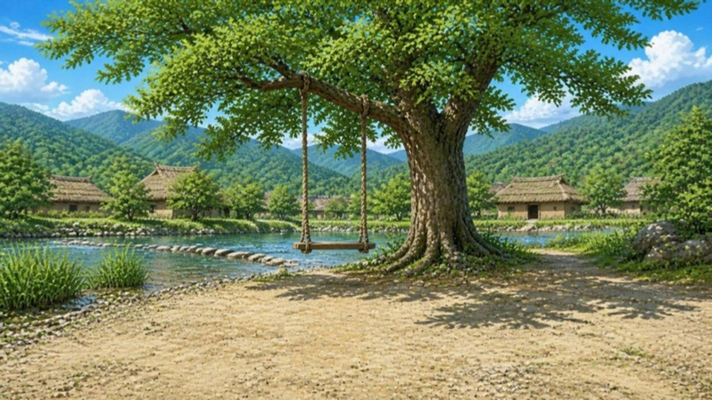
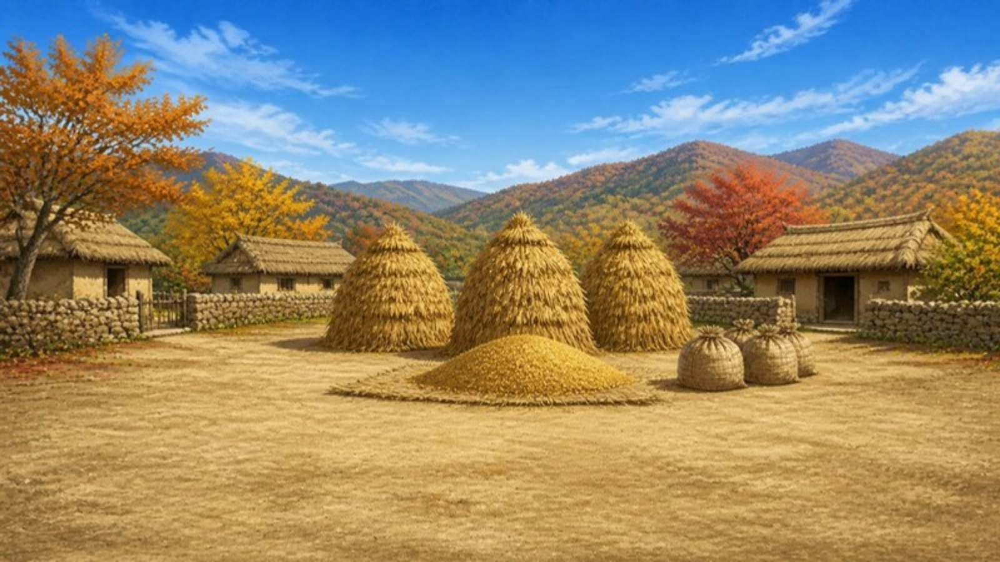

조선 시대 마을 느티골 이야기
조선에서
한 해 살기
그때 사람이 되어 봄, 여름, 가을, 겨울을 살아 보아요.
내가 고르는 대로 한 해가 흘러가요.
「조선에서 한 해 살기」 디자인 시안 C
그림이 주인공이고 UI는 한지 띠처럼 얇게 — 느티골에 들어가 있는 느낌.
주 에디토리얼·헤리티지
한지 띠, 먹 글자, 세리프 제목, 오방색 점·선
보조 이머시브
화면 가득한 장면, 장면의 빛, 고른 자리에 퍼지는 빛
화면 1제목그림이 화면 가득. 비어 있는 아침 하늘에 큰 세리프 제목, 아래 한지 띠 하나에 단추를 모았다. 해 쪽의 무리가 숨 쉬듯 커진다.

조선 시대 마을 느티골 이야기
그때 사람이 되어 봄, 여름, 가을, 겨울을 살아 보아요.
내가 고르는 대로 한 해가 흘러가요.
화면 2맵위 띠는 얇은 반투명 한지(지금 높이의 절반). 수치는 작은 숫자로 접어 두고, 쪽지·작은 지도는 가장자리에, 계절 글은 영화 자막처럼.
봄
1395년 느티골농민 집 아이
해 3/3

봄이월, 얼었던 땅이 풀리고
궁궐 공사에 갔던 이웃이 돌아왔다.
화면 2-2맵 — 펼친 꼴수치를 누르면 이름·뜻·열 칸이 잠깐 뜬다. 할 일 쪽지를 펴면 꼭 할 일 / 덤 두 묶음. 화살표가 가리키는 줄이 가장 밝다.
봄
1395년 느티골농민 집 아이
해 3/3
숫자가 클수록 넉넉해요. 가장 많으면 10이에요.
화면 3대화위아래 먹 띠로 장면을 영화처럼. 위 띠는 맵의 띠와 같은 자리·같은 글꼴에 불만 꺼진 것이고, 일의 표시가 띠 안에 들어앉는다. 화면 어디를 눌러도 넘어간다는 것을 가장자리에 연하게.


봄
1395년 느티골농민 집 아이
해 3/3
꼭 할 일 볍씨 뿌리기
화면 3-2대화 — 선택지선 사람은 양옆으로 비켜서고, 장면 위에 한지 쪽지 둘이 뜬다. 첫째 쪽지를 누르는 순간: 고른 자리에 빛이 퍼진다.
봄
1395년 느티골농민 집 아이
해 3/3
꼭 할 일 볍씨 뿌리기
화면 4한 해 돌아보기네 계절의 채색화를 안개로 이은 두루마리 한 장. 그림 아래에 계절마다 고른 것을 적고, 누른 계절(여기서는 여름)에 빛이 퍼진다. 끝에는 맺음 글과 도장.
1395년 느티골 · 농민 집 아이 · 한 해 돌아보기


올해의 날씨 · 평소 같은 해
→낮은 논은 물 대기가 쉬웠다. 몰아 뿌린 벼가 고르게 잘 자랐다. (살림 +1)
→한양에서 돌아온 이웃이 우리 집 가을걷이를 거들어 주었다. (기력 +1)
덤 미션 「생활 카드 열 장」 — 생활 카드 10장 가운데 7장을 모았어요.
한 해를 끝까지 살았어요.
그림: 제목 — 제미나이로 만든 이른 아침의 느티골(docs/mockup-ui/assets), 대화·돌아보기 — 지금 게임의 채색화(src/assets/pictures), 맵 — 지금 게임의 도트 맵(docs/mockup-ui/now/map-clean.jpg). 한지 결 — 제미나이로 만든 타일. 한 화면만 크게 보려면 주소 뒤에 ?solo=1 (2, 2b, 3, 3b, 4)을 붙여요.